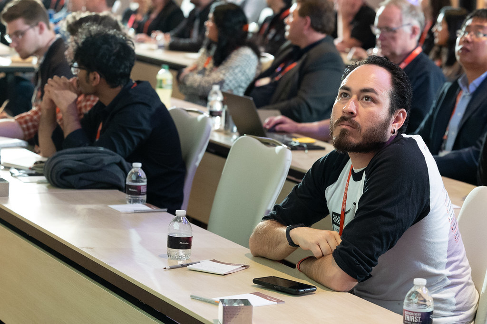

A four-year challenge
Real deadlines, scored deliverables and industry judges shape every phase from architecture selection to final vehicle validation.
Real deadlines, scored deliverables and industry judges shape every phase from architecture selection to final vehicle validation.
The team develops a high-voltage battery, rear electric drive, embedded controls, thermal systems and the interfaces that connect them.
Students from engineering, computing, business and communications work together around one complex vehicle program.

Cal State LA is one of twenty North American universities in the EcoCAR Innovation Challenge and the only university representing California. The four-year competition is managed by Argonne National Laboratory for the U.S. Department of Energy, with Stellantis as the team’s track sponsor.
Meet the team
Cal State LA placed second overall in EcoCAR 2 with a plug-in-hybrid Chevrolet Malibu, returned for EcoCAR 3 with a police-themed hybrid Chevrolet Camaro, and most recently completed the Battery Workforce Challenge with Cerritos College.
That work built a foundation in battery engineering, embedded controls, vehicle integration, thermal design, model-based development and public outreach.

The current concept is a Wildfire Command Vehicle exploring how electrification can support search-and-rescue and emergency-response operations. Students develop the vehicle through requirements, modeling, packaging, fabrication, testing and technical communication.
Each program adds technical knowledge, leadership experience and a stronger path for students to turn curiosity into practical expertise.